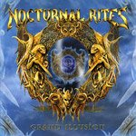

|
|
||
Nocturnal Rites : Grand Illusion (2005) |
|

http://www.nocturnal-rites.com |
1. Fools Never Die 3:54 |
8.5/10 |
|
Tras sólo un año y medio desde su anterior disco, New World Messiah, la banda sueca Nocturnal Rites ha lanzado un nuevo trabajo, titulado Grand Illusion. Al buen hacer de Jonny Lindkvist y el resto del grupo esta vez además se han sumado varios colaboradores de excepción, que incluyen al teclista de Stratovarius Jens Johansson o al guitarra solista de Hammerfall Stefan Elmgren entre otros. "Fools never die" es el primer tema, una pieza melódica y un tanto comercial, con buen estribillo y algo corta, más adecuada para la promoción que como canción de apertura. "Never trust" nos devuelve al power metal melódico pero con pegada que caracteriza a la banda, en una pieza de ritmos variados y estribillo simple pero directo. "Still alive" sigue por el mismo camino con un fantástico y melodioso estribillo, quizás el mejor del álbum. Una implacable batería da soporte al siguiente corte, "Something undefined", donde de nuevo el estribillo da el contraste melódico a una base rítmica densa y contundente. El doble bombo nos trae "Our wasted days" con un memorable estribillo adornado con coros, y un solo de guitarra bastante clásico pero con el toque de originalidad suficiente para resultar interesante. "Cuts like a knife" es una canción de tempo marcado y atmósfera tenebrosa con algunos gruñidos aterradores de acompañamiento. Una breve introducción clásica lleva hasta "End of our rope", un tema de ritmo tranquilo, con un brillante estribillo que también puede optar al título de mejor del disco y otro interesante solo de guitarra. Se acelera de nuevo el pulso del álbum en "Never ending", con sus cambios de ritmo y su sencillo pero directo estribillo. El disco termina con otras dos canciones donde de nuevo sobresalen fundamentalmente sus estribillos: la melodía en el de "One by one" y la épica y fuerza en el de "Deliverance". Los muy cuidados estribillos, los solos de teclados y guitarra, que aunque no siempre sean memorables siempre aderezan con acierto las canciones, y la fuerza que Jonny Lindkvist impone en todos los temas dan como resultado el mismo que en todos los últimos álbmus de Nocturnal Rites: un gran disco, recomendable para fans del Power Metal en general e indispensable para los de esta banda en particular. |
||
- Crítica escrita por Rubén Béjar - |
||